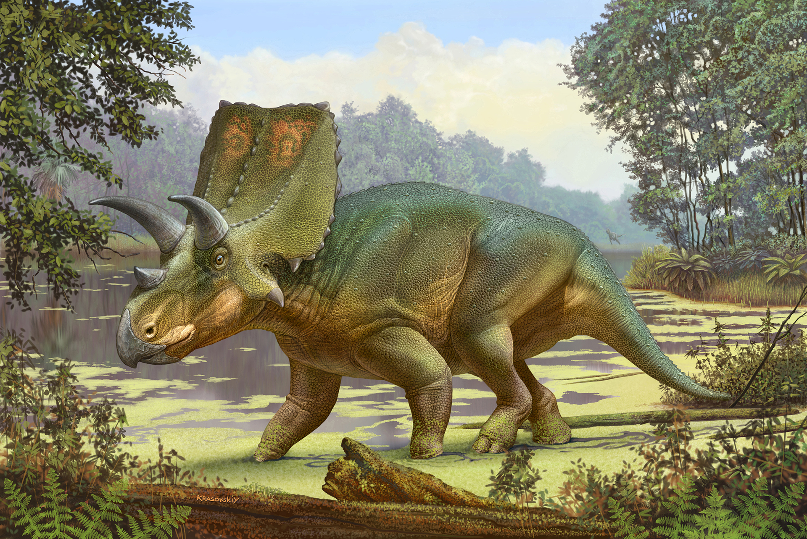
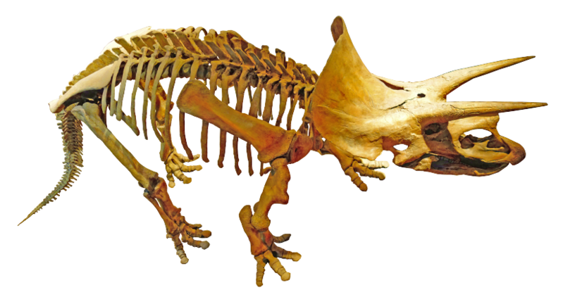

Triceratops
Triceratops is a genus of herbivorous, four-legged dinosaur from the Late Cretaceous period, known for its large skull featuring a distinctive trio of horns and a robust frill at the base. Fossils of this dinosaur have been primarily found in North America, specifically in the Hell Creek Formation and Lance Formation, in regions that were once part of the island continent known as Laramidia. These fossils are discovered in sediments associated with the Maastrichtian age of the upper Cretaceous Period, dating back to approximately 68 to 66 million years ago.
Sergey Krasovskiy, bath.ac.uk
The first identified fossils of the Triceratops were collected by Othniel Charles Marsh, an American paleontologist, in 1887 near Denver, Colorado. The initial discovery was of a pair of horn cores, which were mistakenly thought to belong to an extinct species of buffalo. Subsequent discoveries of more complete skeletons in the Lance Formation and Hell Creek Formation corrected this misunderstanding and brought to light the existence of this unique three-horned dinosaur, enriching our understanding of dinosaur diversity and the complexity of prehistoric ecosystems.
Public Domain commons.wikimedia.org